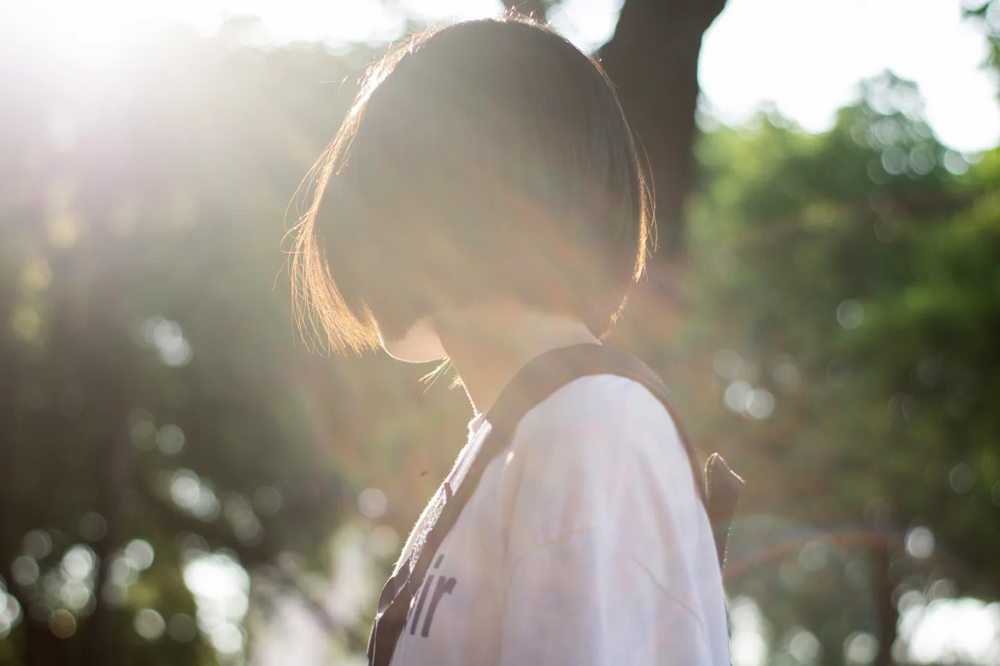

部落格 · 日常&思想
終於願意露出額頭
從來沒有想過把額頭露出來的一天。
01. 小學六年級時，在筆記本上寫下「討厭妹妹頭」，想知道N年後的自己，會不會有一天推翻自己的偏好。
02. 旁分，永遠地旁分，現在也還是。每次剪髮後，瀏海停留在眉毛上緣的位置，密實地蓋住額頭。總有一些把自己藏起來的那種意思。
稍微長長後，輕微的自然捲會讓劉海順著鏡框往旁邊去，變成有點像某些卡通人物的髮型，有點困擾但好像也沒辦法，因為永遠學不會自己剪出漂亮的劉海。（我有努力過啊）
03. 升高中之前都綁著馬尾，忘記何時或什麼原因開始習慣了及肩短髮（甚至讓美髮師自由發揮而剪過像小男生的髮型），肯定有過少女的幻想，又或者期待成為某種女性形象。直到某一天，整理頭髮的麻煩與耗時、喜歡短髮勝過長髮模樣的自己，就這麼接受這個設定（？）直到現在。
04. 令人欣羨的生長速度、健康髮量以及自然捲，這個自覺我還是有的。雖然學生時期我總是執迷不悟，看著別人的「黑長直」，忍不住想：為什麼我無法成為美髮雜誌的範例模樣呢？
設計師說，我的自然捲捲得剛剛好，也不需要特意的剪法就擁有厚實的髮量，這不是很好嗎？
05. 好是好，但下雨的日子就是自然捲放飛自我的日子，就有點心煩了。
06. 大學時，曾用一年半的時間將頭髮留長，為了解鎖一個「捐贈頭髮」的成就。生長速度快、髮量厚實，不覺得非常適合捐髮嗎？也是這段時間，讓我更加確定了「整理長髮真的好花時間啊。」
07. 聽聞染髮會造成不可逆的髮質破壞，這是我有點想嘗試染髮，卻始終無法跨過的一關。一年前才在家人推介下，用了品質比較好的染髮劑，嘗試染了深棕色。深到要在陽光下才看得出顏色的深色，我自己平時都看不出來。沒有特別照顧、也沒有感覺到髮質的劣化，更沒有感覺到染髮後對人生帶來的改變。（…一般人會有嗎？）
08. 剃光頭是在大學留長頭髮準備捐髮時的一個靈感，沒什麼特別原因，就是希望自己有機會可以解鎖一下「剃光頭」的成就。雖然說自己現在沒什麼容貌焦慮，但剃下去需要一段時間長回來，還是需要梁靜茹給一點勇氣。
09. 忘了在什麼時刻，家人說過我的頭型很漂亮，說我是「扣頭（台語）」，相對於「扁頭」，應該就是尖尖的意思吧？
最近一年
10. 不知從何時開始，習慣露出一邊耳朵，作為造型的變化。後來換了設計師，他教我將沒有塞耳後的一邊，頭髮自然地往後側梳去，簡直可說是完整地露出額頭了。
設計師建議是一回事，我要不要遵循是一回事。無論長髮短髮，我一直都覺得瀏海很煩（特別在下雨天的時候），但用一個大夾子、小橡皮圈讓額頭赤裸見客，這種行為始終只發生在家裡。漸漸地往後側梳去成為一種尚可接受的折衷選擇。
有一天，突然發現，我好像跨過了某個坎。
